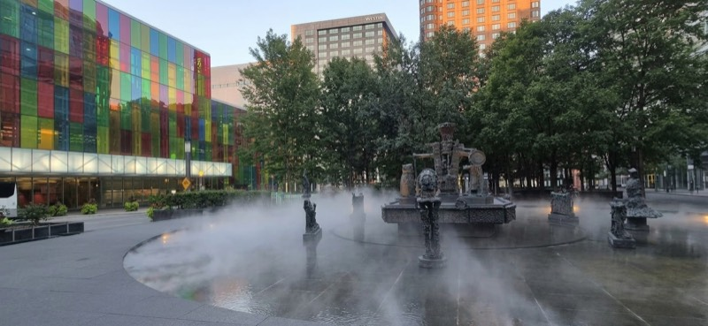
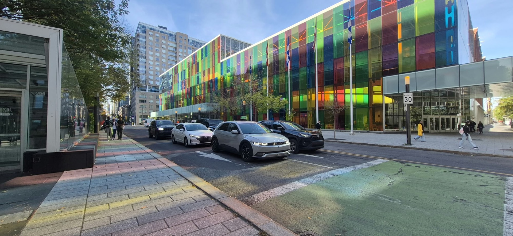
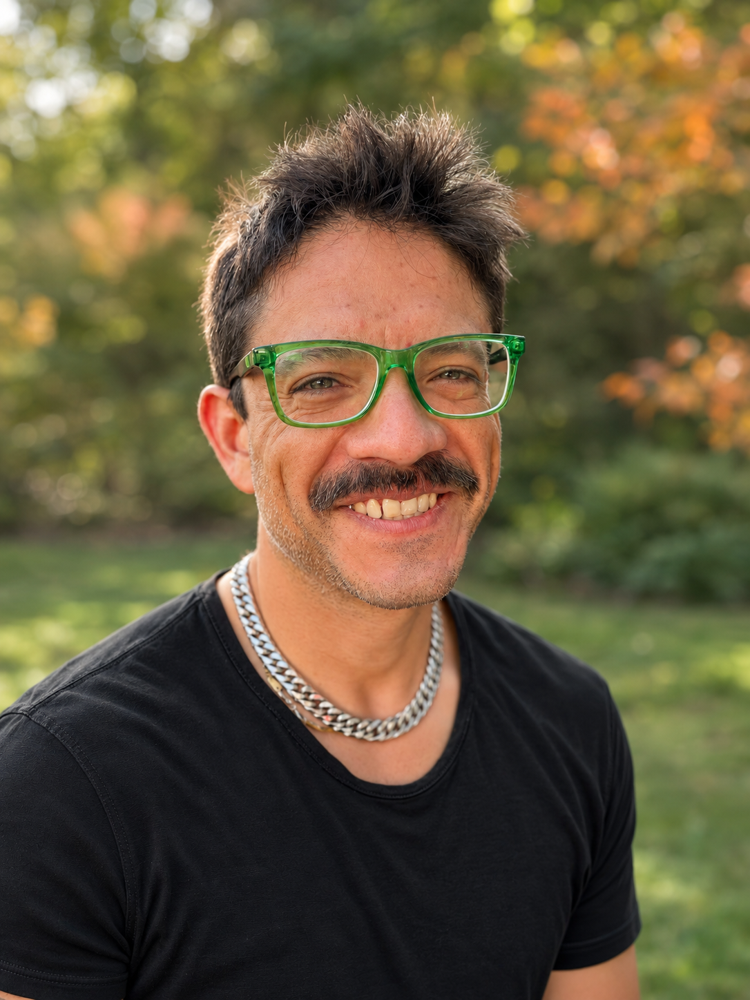
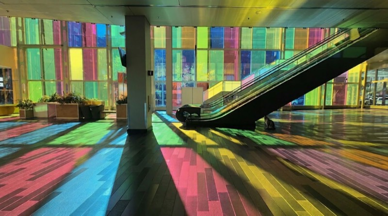
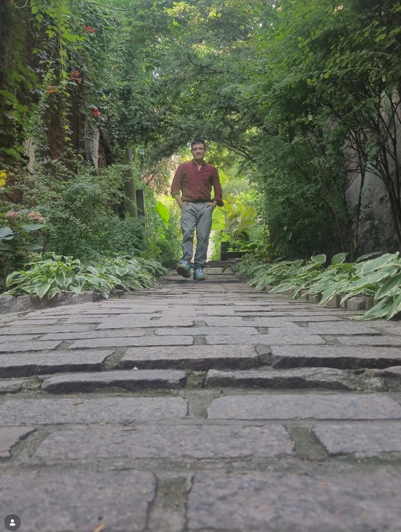

2 horas
Vieux-Montréal
Plazas, calles y los lugares donde empezó la ciudad.
A pie · Vieux-Montréal

Secrets de l'Est, lanes from the West
Hola, soy Bernardo. Me gusta caminar, conversar y notar los detalles donde se cruzan distintas historias.
Je suis géographe, Péruvien établi à Montréal, titulaire d’une maîtrise en développement international et changement social.
Llamo solitudes a esos encuentros: historias que comparten un lugar, aunque no siempre lleguen a encontrarse.
Ce qui me fascine dans les villes, c’est ce qu’elles partagent. Partout, des gens cherchent une place où vivre, une langue dans laquelle se reconnaître, un avenir à construire. Ces aspirations prennent chaque fois une forme différente. À Montréal, elles se lisent dans les rues, les bâtiments, les œuvres et les gestes du quotidien. C’est cette rencontre entre des questions communes et une ville singulière que je vous invite à explorer.
Je suis géographe, Péruvien établi à Montréal. Mon regard voyage entre les lieux, les échelles et les histoires. Une façade m’intéresse pour sa beauté, pour ce qu’elle raconte des personnes qui l’ont construite et de celles qui vivent autour. Une rue me donne envie de comprendre ce qu’elle relie, ce qu’elle sépare et ce qui a changé de part et d’autre. La géographie commence là : dans les relations entre les gens et les lieux.
J’appelle « solitudes » ces mondes qui se côtoient dans une même ville. Des langues, des mémoires, des façons d’habiter qui se rencontrent parfois et s’ignorent souvent. Leurs frontières traversent les quartiers, mais aussi nos habitudes et nos manières de regarder. Elles bougent. Un espace public, une œuvre, une conversation peuvent ouvrir un passage. Je m’intéresse à ces moments où quelque chose devient possible entre des personnes qui partageaient déjà la ville.
Marcher permet de s’en approcher. À pied, on peut s’arrêter devant un détail, revenir sur ses pas, suivre une question. Une passerelle nous fait lever les yeux. Un vitrail retient la lumière. Une sculpture donne une présence à une histoire. Le plaisir de découvrir compte : il nous rend attentifs et nous donne envie d’aller plus loin. La beauté d’un lieu peut nous conduire vers les choix, les espoirs et les conflits qui lui ont donné sa forme.
Je tiens à raconter ces tensions avec soin. Les lieux que nous visitons appartiennent au quotidien de ceux qui y habitent. Leurs histoires demandent de la précision, de l’écoute et la place nécessaire aux désaccords. Parler de rapprochement ou de réconciliation engage aussi à regarder ce qui change concrètement : qui peut rester, qui peut prendre la parole, qui participe aux décisions. Une ville se transforme dans ces possibilités très réelles de vivre ensemble.
Une visite prend vie dans l’échange. Vous arrivez avec vos souvenirs, vos questions, votre propre expérience des villes. Ce que vous reconnaissez ici enrichit ce que nous regardons ensemble. J’apporte un parcours, des connaissances et un point de vue; notre conversation leur donne une autre portée. On peut parler sérieusement, rire, s’étonner et laisser une question ouverte.
J’aimerais que vous repartiez avec un attachement à Montréal et une attention nouvelle pour les lieux que vous traverserez ensuite. Que quelque chose aperçu ici vous accompagne ailleurs. Qu’au détour d’une rue, chez vous, vous ayez envie de ralentir et de regarder encore.
Marchons. La ville a encore beaucoup à nous apprendre.
Cuando viajamos, generalmente vamos a la caza de aquello que solamente se puede encontrar en ese destino. Pero, al final del viaje, es aquello que la ciudad comparte con nuestra ciudad de origen lo que nos cautiva más.
Esas historias que se repiten en los contextos más disímiles son una manifestación de la más pura humanidad.
¿Y si te hablo de una ciudad construida sobre una isla fluvial, habitada por Primeras Naciones que un día conocieron a colonos europeos y que luego fueron ambas conquistadas por el invasor inglés? Y, para colmo, en el centro de esa isla hay un parque enorme diseñado por el mismo arquitecto. No sabemos si hablamos de Nueva York o de Montréal.
Y, de la misma forma, si te hablo de una ciudad que tiene una cruz sobre la cima de la colina que está al lado del centro histórico, y cuya historia está fuertemente asociada con la fundación de la ciudad, podríamos estar hablando de cualquier ciudad de América Latina, incluida Montréal.

Tres duraciones para empezar; el ritmo y el enfoque se ajustan al grupo.
Toutes les options sont affichées.

Plazas, calles y los lugares donde empezó la ciudad.

Vieux-Montréal, ciudad subterránea y centro.

Añade un barrio residencial, como Plateau o Mile End.
Bernardo ajusta el recorrido, el ritmo y el nivel de detalle según quién camina: visitantes, familias, escuelas o grupos profesionales.
Un recorrido fuera del centro, conservado como una experiencia singular.
Una salida preparada con las escuelas de francización y ofrecida gratuitamente a sus alumnos.
Un formato más lúdico, ajustado a la edad y a la energía del grupo.
Un recorrido pensado con las condiciones reales del trayecto y un ritmo propio.
Una salida colectiva regular, sostenida por las propinas del grupo.
Itinéraire, facture, langue et profondeur ajustés à la demande.
Un format à distance ou complémentaire, que Bernardo définira avec le public et le parcours.
Elige el tiempo, el punto de partida y el nivel de detalle. Bernardo ajusta la ruta, el ritmo y los temas a tu grupo.
Preparar una visita privée →Lo esencial para elegir un recorrido y preparar tu visita.
Les visites sont généralement proposées en français et en anglais; certaines dates peuvent se faire en espagnol. Confirmez la langue lors de la réservation. Le site est disponible dans les trois langues.
Puedes elegir entre 2, 3 y 4 horas. El recorrido de 2 horas se concentra en el Vieux-Montréal; las rutas más largas pueden incluir el centro y otros barrios.
Las visitas colectivas están pensadas para grupos pequeños, hasta diez personas. Las visitas privadas y los grupos institucionales se preparan según el encargo y la disponibilidad.
Algunas rutas de 3 o 4 horas combinan caminata y transporte público. El trayecto se confirma al preparar la visita.
Sí. Lachine es un recorrido raro, ofrecido hasta dos veces por año. También se preparan visitas para familias, escuelas de francización y personas con movilidad reducida. Las salidas a contribución y los formatos para agencias, universidades o conferencias dependen del calendario y del encargo; consulta con Bernardo antes de reservar.
La caminata sigue.
Fotos, recorridos y detalles de la ciudad.